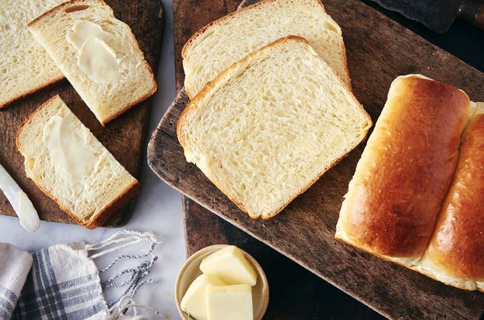

Japanese Milk Bread

Japanese Milk Bread Loaf (https://www.kingarthurbaking.com/recipes/japanese-milk-bread-recipe)
This recipe is a take on a traditional Japanese Hokkaido milk bread, an extremely soft and pillowy enriched bread which is one of my favourites!
Preparation involves making a tangzhong paste, which is the secret to creating the soft texture. This bread is fantastic with some jam!
Ingredients
Tangzong
- 3 tablespoons (43g) water
- 3 tablespoons (43g) milk, whole preferred
- 2 tablespoons (14g) Bread Flour
Dough
- 2 1/2 cups (300g) Unbleached Bread Flour
- 2 tablespoons (14g) Dry Milk or nonfat dry milk
- 1/4 cup (50g) granulated sugar
- 1 teaspoon (6g) salt
- 1 tablespoon instant yeast
- 1/2 cup (113g) milk, whole preferred
- 1 large egg
- 4 tablespoons (57g) unsalted butter, melted
Steps
-
Prepare the tangzong by adding the ingredients to a saucepan and heating over medium heat. Continuously mix the ingredients until a thick paste
is formed. Remove from heat and allow to cool in a container.
- Combine all ingredients, including the tangzong in a mixing bowl and proceed to mix all ingredients until a smooth dough is obtained.
- Shape the dough into a ball and allow to ferment for approximately 1 to 1.5 hours, until puffy.
- Divide the dough into four even pieces.
- Shape each piece by rolling out into a rectangle, then folding each piece into a log shape.
- Place each piece side-by-side and seam side down in a lightly greased loaf pan. Allow to proof for 40-50 minutes.
- Pre-heat an oven to 180 degrees Celsius while waiting for the dough to proof.
- Brush the top of the proved dough with milk and place in the oven to bake for 30-35 minutes until brown.
- Remove the loaf from the oven and allow to cool on a cooling rack.
- Enjoy!
Home